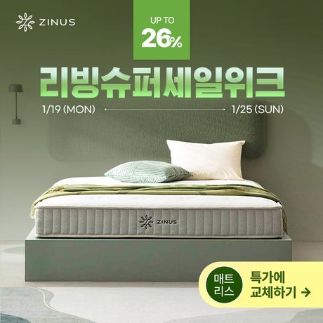
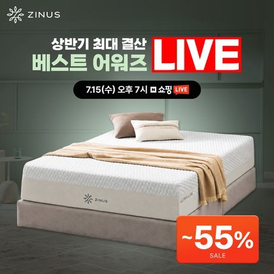

A/B 테스트
유효한 A/B 테스트를 설계합니다.
상황
브랜드데이, 기획전, 라이브 프로모션이 월 3~5건씩 겹쳤습니다. 프로모션의 영향을 고려해 테스트 조건을 맞추고 결과를 비교해야 했습니다.
한 일
2026년 2월부터 8월까지 소재 5건, 광고 대상 3건, 입찰과 노출 위치 3건, 신규 매체 2건 등 총 13건의 A/B 테스트를 진행했습니다.
결과를 믿을 수 있게 정한 기준
비교 조건
테스트마다 비교할 요소를 하나로 정하고 나머지 조건은 같게 맞췄습니다. 전후 성과는 같은 길이의 기간을 기준으로 비교했습니다.
평가 지표
제품의 역할에 따라 평가 지표를 다르게 정했습니다. 주력 제품은 매출 규모로, 육성 제품은 CTR과 상세 유입으로 평가했습니다.
측정 점검
직접 만든 BigQuery 대시보드를 점검하다 메타 공식몰 계정의 전환 데이터가 전 기간 0으로 남은 오류를 발견해 개발팀에 확인을 요청했습니다. 카카오는 픽셀이 없어 전환이 덜 잡히므로 노출, 클릭, 비용으로 판단하는 규칙을 정했습니다.
결과 기록
성과가 낮았던 안도 변경 전 상태, 현재 결과, 다음 계획을 관리표에 남겼습니다. 직접 세분화한 광고 대상 3종은 모두 기본 관심사 대상보다 성과가 낮아(CPC 최대 3.8배) 다음 달 운영 계획에서 제외했습니다.
결과
같은 조건에서 진행한 A/B 테스트
13건
GFA ROAS*
+245%p
테스트 전후 비교
협력광고 CVR*
+0.48%p
테스트 전후 비교
* 테스트 전후 같은 길이의 기간을 비교한 수치입니다. 실험 외에 광고 운영을 조정한 영향도 포함돼 있습니다.


같은 기간에 운영한 프로모션 소재입니다. 소재 기획은 직접, 디자인은 디자인팀과 협업했습니다.
같은 방식으로 일한 다른 브랜드
F&F 디스커버리, 기여 40%
검색광고의 상품 분류를 다시 구성하고 변경 전후 각각 2주간의 성과를 비교했습니다. 파워링크 ROAS는 227%p 올랐습니다. 광고비는 39% 줄었고 매출은 10% 감소했습니다.
샤크닌자, 기여 50%
청소기와 주방가전의 광고 예산을 성과에 따라 다시 배분하고, 결과를 확인해 배분 기준을 조정하는 과정을 설계했습니다.
이시스에서는
가입 혜택 문구 테스트부터 비교 조건, 평가 지표, 측정 점검 기준을 먼저 정하고 시작하겠습니다.